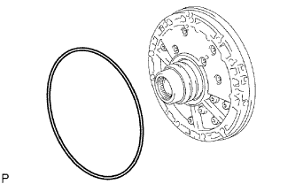
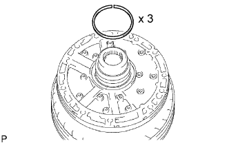
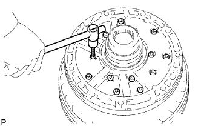
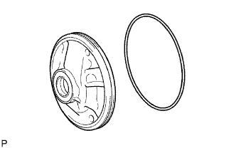
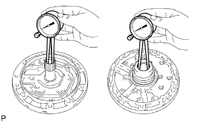
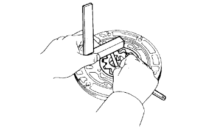

МАСЛЯНЫЙ НАСОС > РАЗБОРКА |
| 1. СНИМИТЕ КОЛЬЦЕВОЕ УПЛОТНЕНИЕ КАРТЕРА АВТОМАТИЧЕСКОЙ ТРАНСМИССИИ |
|  |
Снимите кольцевое уплотнение с масляного насоса в сборе.
| 2. ЗАФИКСИРУЙТЕ МАСЛЯНЫЙ НАСОС В СБОРЕ |
 |
Поместите корпус масляного насоса на муфту гидротрансформатора.
| *1 | Муфта гидротрансформатора |
| 3. СНИМИТЕ МАСЛОУПЛОТНИТЕЛЬНОЕ КОЛЬЦО БАРАБАНА МУФТЫ |
|  |
Снимите 3 маслоуплотнительных кольца.
| 4. СНИМИТЕ ВАЛ СТАТОРА В СБОРЕ |
|  |
Выверните 14 болтов и снимите вал статора с корпуса масляного насоса.
| 5. СНИМИТЕ ПЕРЕДНЕЕ КОЛЬЦЕВОЕ УПЛОТНЕНИЕ КОРПУСА МАСЛЯНОГО НАСОСА |
|  |
Снимите кольцевое уплотнение с корпуса масляного насоса.
Снимите корпус масляного насоса с муфты гидротрансформатора.
| 6. ПРОВЕРЬТЕ КОРПУС ПЕРЕДНЕГО МАСЛЯНОГО НАСОСА В СБОРЕ |
 |
С помощью индикатора часового типа измерьте внутренний диаметр втулки корпуса масляного насоса.
| 7. ПРОВЕРЬТЕ ВАЛ СТАТОРА В СБОРЕ |
|  |
С помощью индикатора часового типа измерьте внутренний диаметр втулки вала статора.
| 8. ПРОВЕРЬТЕ ЗАЗОР МАСЛЯНОГО НАСОСА В СБОРЕ |
 |
Прижмите ведомую шестерню к одной из сторон корпуса.
С помощью комплекта плоских щупов измерьте зазор корпуса.
 |
С помощью комплекта плоских щупов измерьте зазор между вершинами зубьев ведущей и ведомой шестерен.
|  |
С помощью стальной поверочной линейки и комплекта плоских щупов измерьте боковой зазор обеих шестерен.
| Метка | Толщина |
| 0 | 10,74-10,749 мм (0,42283-0,42319 дюйма) |
| 1 | 10,75-10,759 мм (0,42323-0,42358 дюйма) |
| 2 | 10,76-10,77 мм (0,42362-0,42401 дюйма) |
| 3 | 10,771-10,78 мм (0,42405-0,42441 дюйма) |
| 4 | 10,781-10,79 мм (0,42445-0,42480 дюйма) |
| 9. СНИМИТЕ ВЕДУЩУЮ ШЕСТЕРНЮ ПЕРЕДНЕГО МАСЛЯНОГО НАСОСА |
 |
| 10. СНИМИТЕ ВЕДОМУЮ ШЕСТЕРНЮ ПЕРЕДНЕГО МАСЛЯНОГО НАСОСА |
 |
| 11. СНИМИТЕ ПЕРЕДНИЙ САЛЬНИК МАСЛЯНОГО НАСОСА |
 |
Извлеките сальник с помощью отвертки.